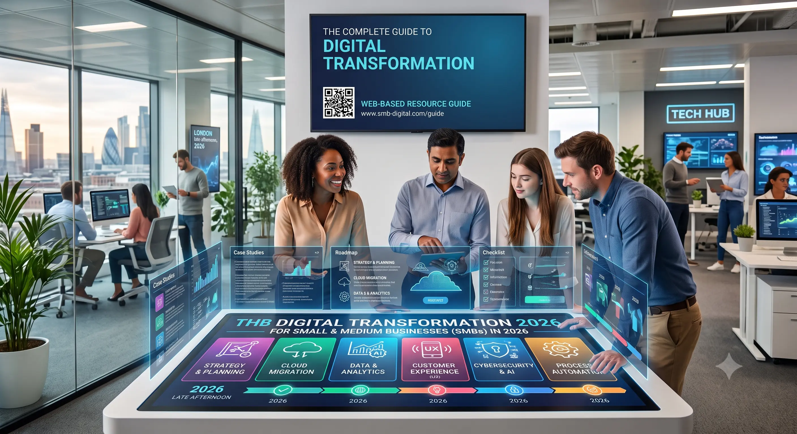
Visibility Across the Stack
Monitoring, analytics, and security decisions work best when teams can actually see what is happening across systems.
We combine proven open-source platforms with enterprise-grade commercial technologies to build environments that are secure, maintainable, and cost-aware. The goal is not to use more tools, but to use the right ones for your business, team, and growth stage.
Lower recurring spend, clearer architecture, and stronger alignment between reliability, performance, and business risk.
This page gives a practical view of the technologies we commonly recommend, implement, and support. Some environments benefit most from open-source platforms, while others call for a hybrid model with selected enterprise tooling. We help you make that choice intentionally.

Monitoring, analytics, and security decisions work best when teams can actually see what is happening across systems.
From collaboration platforms to hybrid security models, the stack should grow with the business without becoming harder to manage.
These examples reflect the kinds of technology environments clients often ask us to design, secure, and improve across branches, cloud productivity, and operational visibility.
Structured branch connectivity, segmentation, VPN planning, and firewall-aware network design for growing environments.
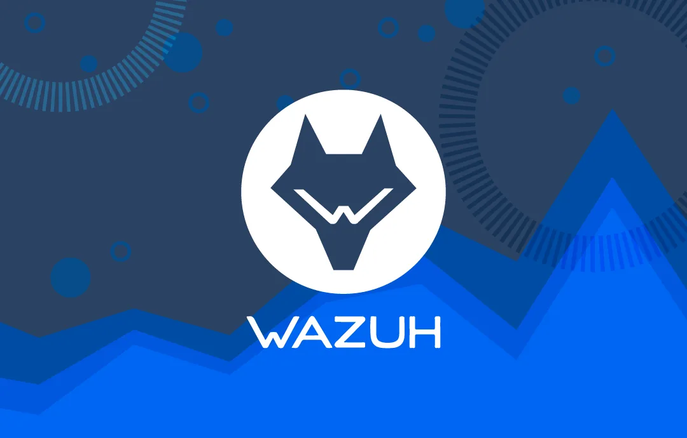
Firewall policy visibility, security posture reviews, and operational dashboards that help teams respond with confidence.
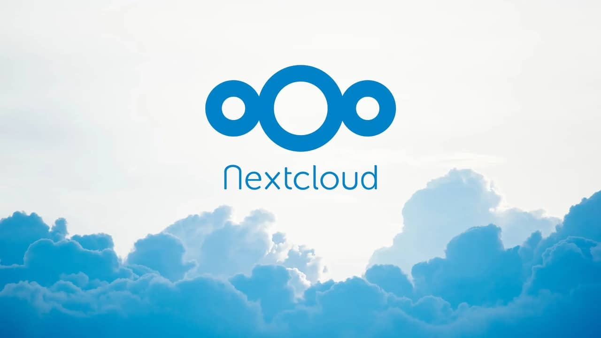
Cloud productivity, email, identity, and collaboration environments that align with user expectations and support models.
Monitoring, alerting, and response workflows designed to improve visibility without adding unnecessary complexity.
Live visibility into top talkers, protocols, flows, and bandwidth trends so teams can troubleshoot branch and internet performance faster.
`r`n Read the ntopng guide`r`n
Enterprise virtualization for businesses replacing VMware-heavy cost with a more efficient private infrastructure stack.
Save 70% vs VMwareSelf-hosted file sync, sharing, and collaboration for organizations that want stronger control over data and access.
Save 100% licensingSecurity monitoring and SIEM visibility without the cost profile of large commercial analytics platforms.
Free SIEM Alternative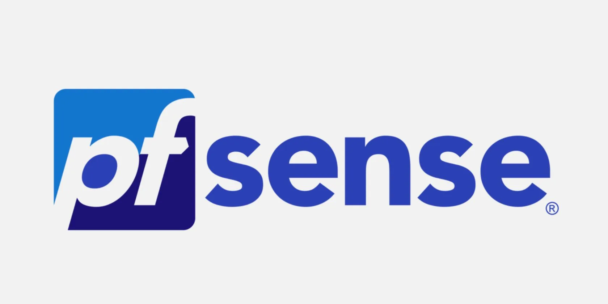
Firewall and connectivity security for branches, remote access, segmentation, and dependable perimeter protection.
No License Fees
Infrastructure monitoring and alerting for uptime-sensitive systems that need better operational visibility.
Save 80%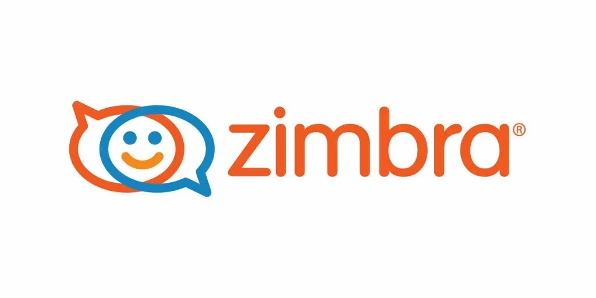
Email and collaboration for teams seeking a more cost-controlled alternative to Exchange-heavy deployments.
Save 60% vs Exchange
Helpdesk and ITSM tooling that improves ticket flow, asset visibility, and service process control.
Free ITSM Solution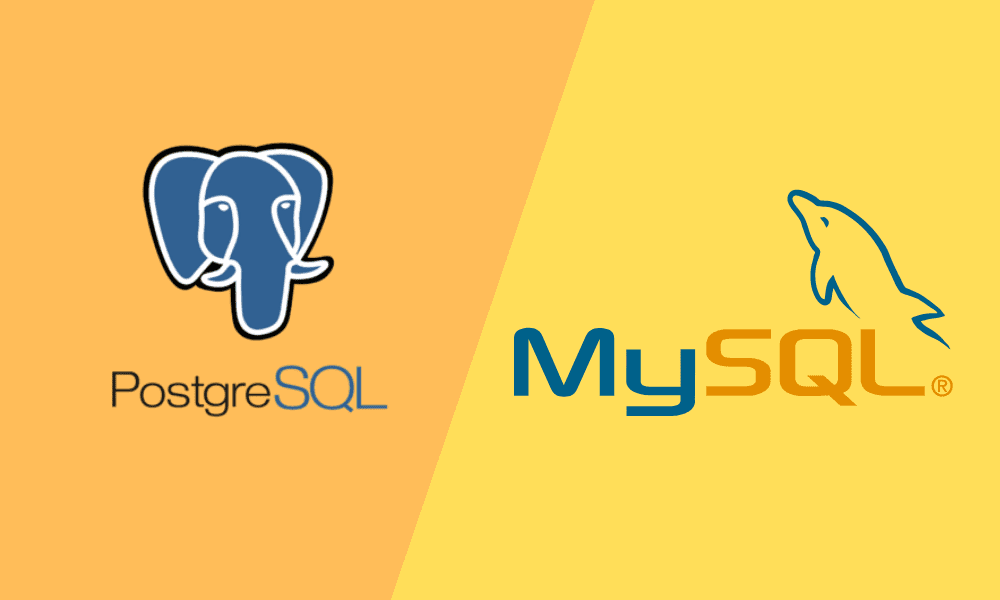
Production-ready databases for applications, reporting, and business systems that need performance and flexibility.
Save 100% licensing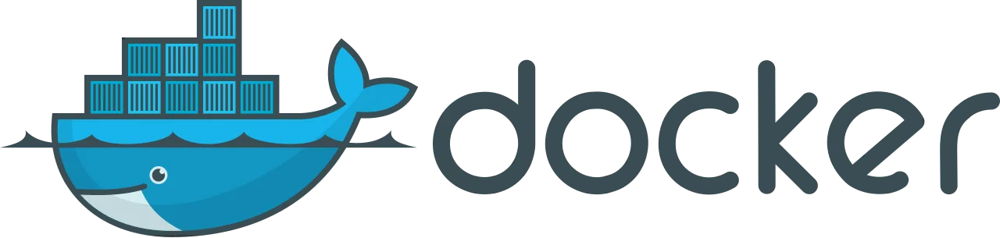
Container platforms for modern applications, internal tools, and environments that benefit from portability and scale.
Free Container Runtime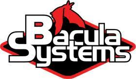
Backup and recovery tooling aligned to resilience goals, retention needs, and the 3-2-1 backup rule.
Community Edition Available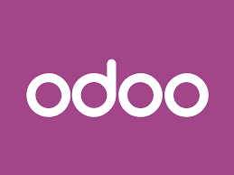
Business applications for CRM, ERP, operations, and workflow centralization without enterprise licensing bloat.
Save 90% on licensing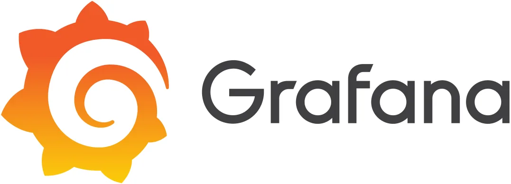
Metrics, analytics, and dashboards for teams that need a clearer view of health, performance, and trends.
Open Source Analytics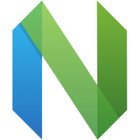
Document collaboration for teams that want office-suite capability integrated into a self-hosted ecosystem.
No Per-User FeesVideo conferencing for organizations that prefer privacy, control, and lower ongoing communication costs.
Unlimited Meetings
Team chat and collaboration for internal messaging environments that need control and integration flexibility.
No Subscription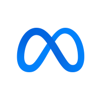
Messaging, file sharing, and collaboration in a self-managed environment where data ownership matters.
Full Data Control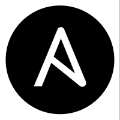
ERP and business workflow tooling that supports manufacturing, HR, CRM, and finance without high licensing overhead.
Zero Licensing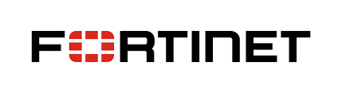
Next-generation firewalls and SD-WAN for businesses that need dependable perimeter and branch security.
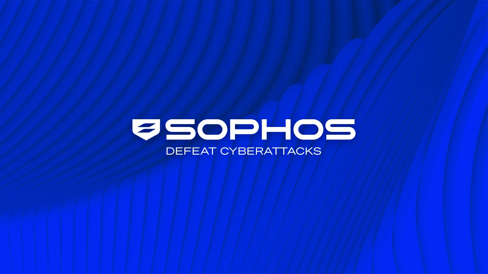
Endpoint security and firewall solutions for teams balancing protection, usability, and administrative simplicity.
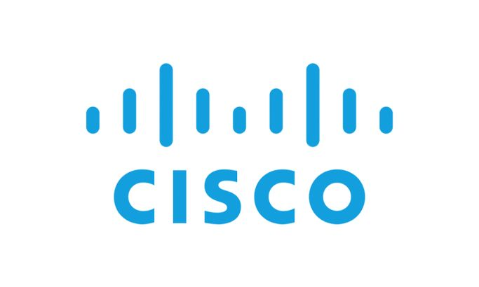
Networking and security platforms across switching, wireless, branch connectivity, and cloud-managed operations.
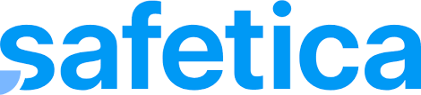
Data loss prevention for organizations that need stronger control over sensitive information and user activity.
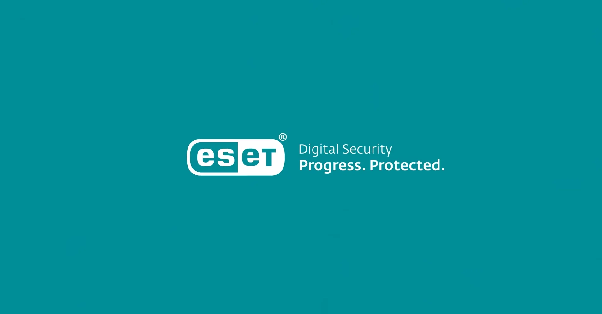
Lightweight endpoint protection for businesses that want effective security without heavy operational drag.
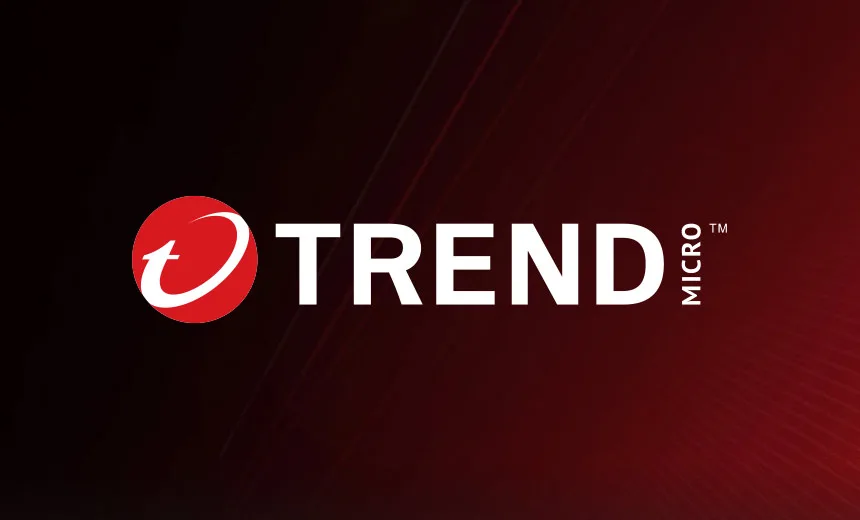
Cloud and endpoint security tooling suited to environments with stronger enterprise control requirements.
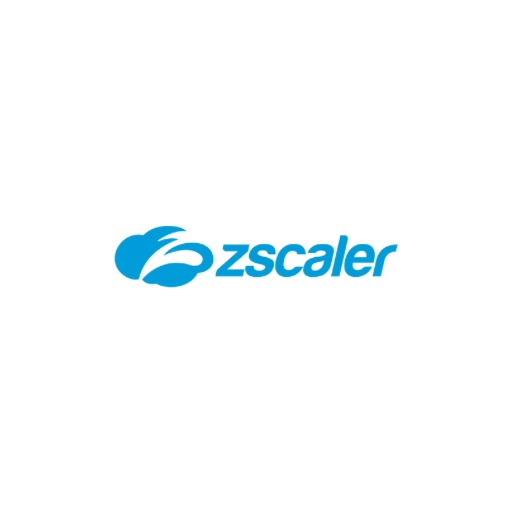
Cloud security and secure access service edge tooling for modern distributed work environments.
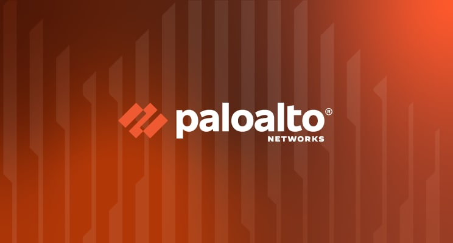
Firewall and cloud security platforms for businesses with advanced policy, inspection, and segmentation needs.
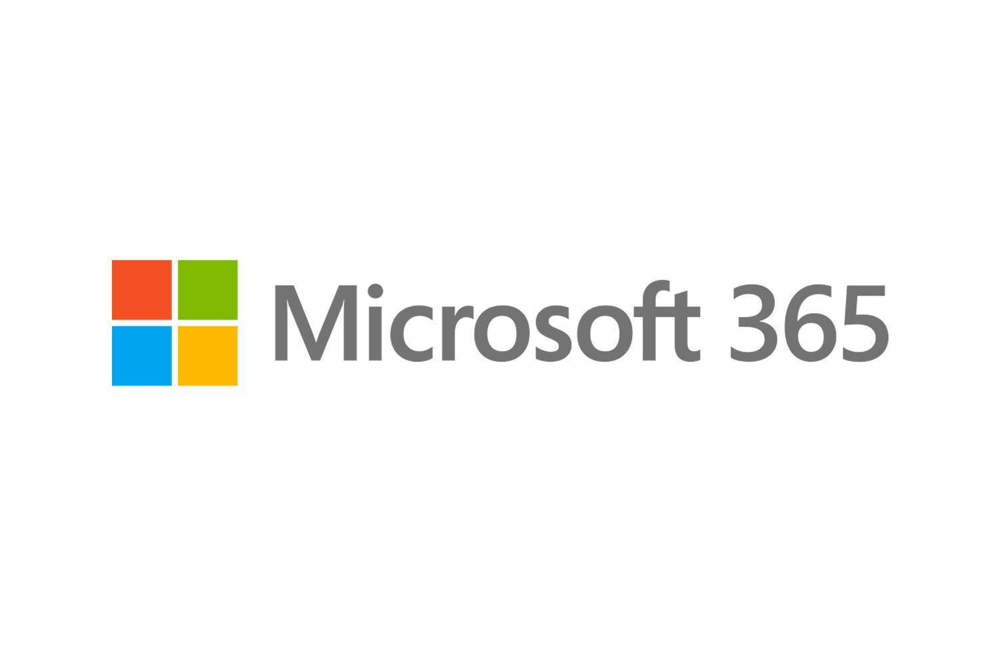
Productivity, identity, and collaboration services when commercial cloud alignment is the right fit for the business.
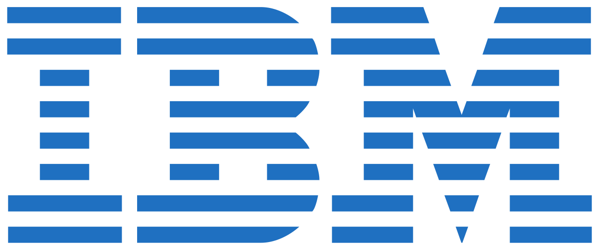
Enterprise security tooling including QRadar and Guardium for larger monitoring and governance needs.
WordPress, Shopify, and Webflow-based environments for websites that need a practical balance of speed and control.
Shopify, Magento, and WooCommerce for digital commerce operations that need integration, reliability, and scale.
The right stack is rarely the one with the most features. It is the one that matches the business operating model, the internal support capacity, the required uptime, the security expectations, and the budget available for ongoing ownership. That is why we compare tools by fit, not by trend.
Should the stack be fully open source? Not always. Many businesses get the best result from a hybrid model that uses open-source where it adds value and commercial tooling where support, compliance, or user expectations matter more.
Can the stack change over time? Yes. Good architecture makes it easier to start with one model and evolve toward a broader platform strategy as the business grows.